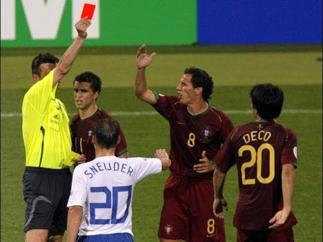
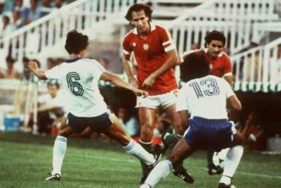

FIFA
COPA MUNDIAL DE FUTBOL
QATAR
2022
INICIO
PARTIDOS
ESTADIOS
HISTORIA
QATAR
GOLES HISTORICOS
CURIOSIDADES
JUGADORES HISTORICOS
GALERIA
El Récord de Expulsiones y Tarjetas

El Partido con Más Goles
El Récord de Expulsiones y Tarjetas

El Portero Más Tiempo Imbatido